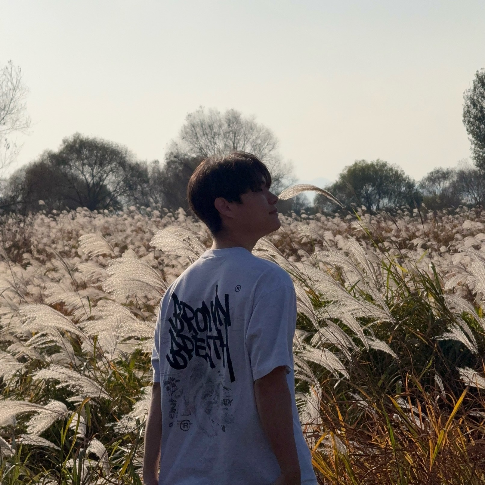

Engineering the Future with
AI & Robotics
안녕하세요, 엄태주 (Taejoo Um) 입니다.
국립한국해양대학교 조선해양시스템공학전공 석사과정으로, 인공지능 기술과 계산공학을 융합하여 실제 산업 현장의 복잡한 문제를 해결합니다.

Vision & Focus
조선해양 산업은 거대한 규모의 구조물, 복잡한 생산 공정, 방대한 데이터가 얽혀있는 고도화된 엔지니어링 분야입니다.
저는 단순한 이론적 접근을 넘어, 현장의 데이터 구조와 사용 환경을 깊이 이해하고 이를 해결할 수 있는 실용적인 인공지능/계산공학 기반 자동화 기술을 연구합니다.
로봇 제어를 직관적으로 바꾸고, 방대한 CAD/CAE 데이터 처리 병목을 해소함으로써 조선해양 및 제조 산업의 디지털 전환(Digital Transformation)에 기여하는 것이 저의 궁극적인 비전입니다.
핵심 역량
LLM (LLaMA), Speech Recognition (Whisper), 협동 로봇 제어 로직 설계
3D Reconstruction (NeuS), Ray Casting, Mesh Processing, CAD 형상 경량화
Python, C++, JavaScript, React, TensorFlow, OpenCV, Git, Docker
주요 연구 실적
LLM 기반 협동 용접 로봇 음성 제어 시스템
복잡하고 위험한 용접 현장에서 티칭 펜던트 조작의 한계를 극복하기 위해, 자연어 음성 명령을 로봇이 이해할 수 있는 JSON 형태의 정형화된 제어 파라미터(시작점, 종료점, 속도, 주파수 등)로 변환하는 시스템을 구축했습니다.
- Whisper-small 음성 인식 및 LLaMA 3.2 3B 모델 Fine-tuning 수행
- 명령 분류 정확도 95%, 텍스트-JSON 변환 정확도 100% 달성
- 핸즈프리(Hands-free) 로봇 제어 환경 기반 마련
비수밀 CAD 모델의 외관 보존형 경량화 및 내부 형상 제거
SCIE급 국제학술지 Journal of Computational Design and Engineering (JCR Q1) 투고 (Revision 단계)
한국CDE학회 웹진 인터뷰 기사 보기
대규모 조립체의 비수밀 구조(미세한 틈, 균열 등)로 인해 발생하는 레이캐스팅 누수 문제를 해결하기 위해 NeuS 가이드 하이브리드 레이캐스팅(NGSE) 기법을 제안했습니다. 기하학적 정밀도를 잃지 않으면서도 내부 형상만 완벽히 식별하여 제거합니다.
- 원본 메시 페이스를 유지하며 NeuS를 위상적 내부/외부 판별 가이드로만 활용
- 대형 선박 모델에서 내부 제거율 93.80%, 외부 보존율 98.50% 달성
- 디지털 트윈 및 CFD/FEA 해석 전처리 과정의 막대한 비용 절감
Projects
split3mf
3D 프린팅 및 형상 처리를 위한 3MF 파일 분할 및 제어 웹 플랫폼입니다. 사용자가 웹상에서 바로 복잡한 3D 모델 데이터를 파싱하고 원하는 형태로 분할할 수 있도록 지원합니다.
2playervs
웹 기반 실시간 2인용 대전 게임 및 인터랙티브 웹 서비스입니다. 별도의 설치 없이 브라우저 상에서 바로 사용자들이 즉각적인 상호작용과 경쟁을 즐길 수 있도록 구현되었습니다.
crashviewer
충돌 해석 데이터 분석 및 3D 시각화를 위한 전용 뷰어 프로젝트입니다. 복잡한 충돌 시뮬레이션 결과와 구조 변형 데이터를 직관적으로 렌더링하고 분석할 수 있는 환경을 제공합니다.
Let's build the future together
협업 문의, 연구 내용 관련 질문, 또는 프로젝트에 대한 아이디어가 있으시다면 언제든 연락주세요.
taejooum@gmail.com